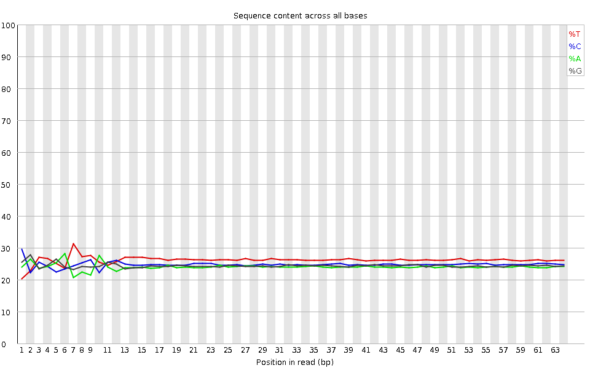
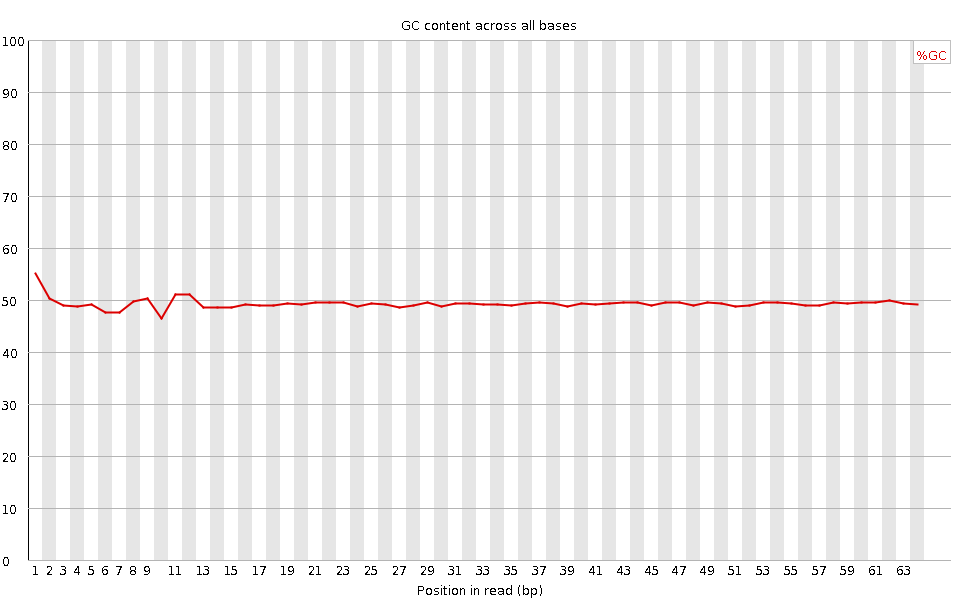
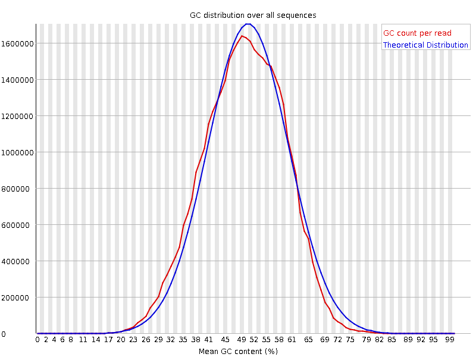
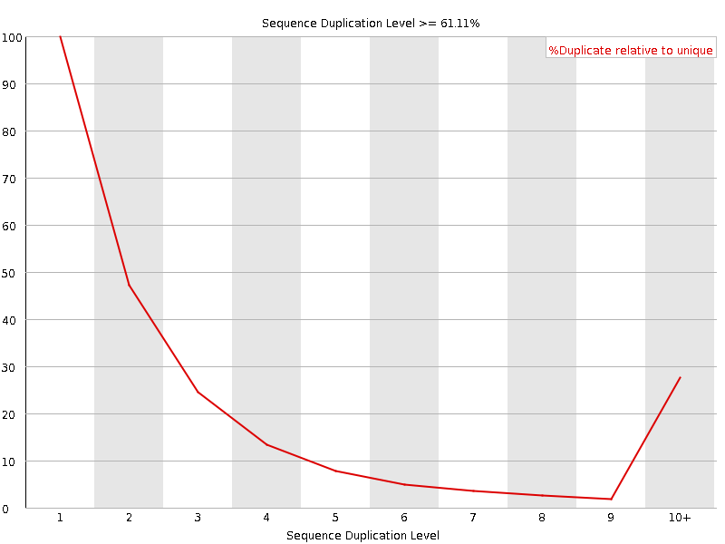
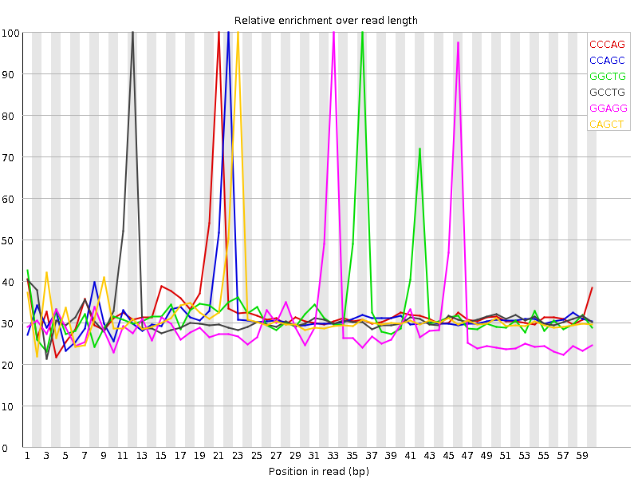

![[OK]](Icons/tick.png) Basic Statistics
Basic Statistics
| Measure | Value |
|---|---|
| Filename | SRR307924_pe_2.f.fastq |
| File type | Conventional base calls |
| Encoding | Sanger / Illumina 1.9 |
| Total Sequences | 26524875 |
| Filtered Sequences | 0 |
| Sequence length | 64 |
| %GC | 49 |
Per base sequence quality

Per sequence quality scores

Per base sequence content

![[WARN]](Icons/warning.png) Per base GC content
Per base GC content

Per sequence GC content

Per base N content

Sequence Length Distribution

![[FAIL]](Icons/error.png) Sequence Duplication Levels
Sequence Duplication Levels

Overrepresented sequences
| Sequence | Count | Percentage | Possible Source |
|---|---|---|---|
| CGGTGGCGCGTGCCTGTAGTCCCAGCTACTCGGGAGGCTGAGGCTGGAGGATCGCTTGAGTCCA | 60692 | 0.22881163436208463 | No Hit |
| CGGTGGCGCGTGCCTGTAGTCCCAGCTACTCGGGAGGCTGAGGTGGGAGGATCGCTTGAGCCCA | 30889 | 0.11645295218167852 | No Hit |
Kmer Content

| Sequence | Count | Obs/Exp Overall | Obs/Exp Max | Max Obs/Exp Position |
|---|---|---|---|---|
| CCCAG | 3259945 | 2.2274122 | 6.745073 | 21 |
| CCAGC | 3084630 | 2.1076252 | 6.5843687 | 22 |
| GGCTG | 3203615 | 2.0747635 | 6.2850747 | 36 |
| GCCTG | 3077770 | 1.9632479 | 6.146803 | 12 |
| GGAGG | 2729270 | 1.9516631 | 6.453366 | 33 |
| CAGCT | 3005515 | 1.9439319 | 6.104776 | 23 |
| TGCCT | 3168355 | 1.8843228 | 5.8014936 | 11 |
| GAGGA | 2560550 | 1.8565847 | 6.374911 | 47 |
| CTGAG | 2685250 | 1.7633406 | 5.969978 | 38 |
| GGTGG | 2645095 | 1.7392378 | 6.156483 | 2 |
| GCTGA | 2632490 | 1.7286943 | 5.9427905 | 37 |
| TCCCA | 2661880 | 1.695748 | 5.7577124 | 20 |
| AGGCT | 2511985 | 1.6495616 | 5.9388514 | 35 |
| CCTGT | 2682305 | 1.5952531 | 5.469276 | 13 |
| GAGGC | 2192055 | 1.5439048 | 6.2137785 | 34 |
| TGAGG | 2305220 | 1.536927 | 5.7988286 | 39 |
| GGGAG | 2120525 | 1.516358 | 6.068936 | 32 |
| GTGGC | 2271685 | 1.471216 | 5.762047 | 3 |
| GTGCC | 2044910 | 1.3044072 | 5.558167 | 10 |
| TTGAG | 2085705 | 1.2965112 | 5.0602784 | 56 |
| CTTGA | 2080300 | 1.2736789 | 5.1369 | 55 |
| AGGAT | 1864990 | 1.2607836 | 5.461419 | 48 |
| AGTCC | 1707175 | 1.1041807 | 5.2593584 | 18 |
| CTGTA | 1773145 | 1.085621 | 5.0338573 | 14 |
| TGGCG | 1404220 | 0.9094178 | 5.382988 | 4 |
| AGCTA | 1343055 | 0.8942696 | 5.1648445 | 24 |
| GATCG | 1324965 | 0.8700734 | 5.112424 | 50 |
| GGCGC | 1223575 | 0.8371188 | 5.322887 | 5 |
| CGGTG | 1080970 | 0.7000708 | 5.221922 | 1 |
| CGGGA | 985725 | 0.69426423 | 5.1839237 | 31 |